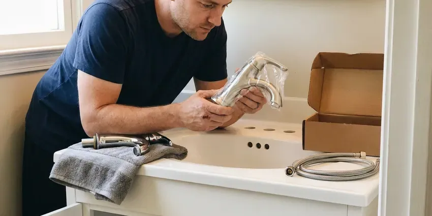
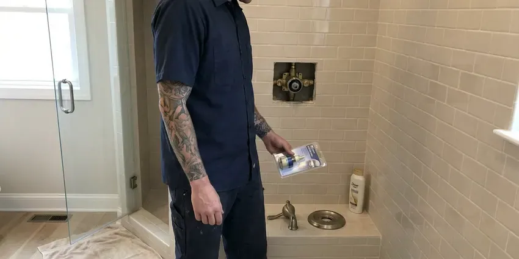

Toilet Installation in West Fargo, ND
Picking out a new toilet for your West Fargo, ND home? We install standard two-piece, one-piece and WaterSense models.
- Built to Plumbing Code
- Licensed and Insured
- Next-Day Installs Available
- Licensed Plumbers

Need a New Toilet Set in West Fargo, ND?
Book with HPN Plumbing and get the toilet set level, sealed and tested in one trip.
Toilet Installation for New and Remodeled Baths in West Fargo, ND
A toilet install at HPN Plumbing starts with the water off and the tank drained, then the old unit unbolted and lifted straight up so the wax does not smear across the floor. We stuff a rag in the drain right away. It blocks sewer gas and catches any bolt that slips. The new toilet goes on fresh hardware and gets a final check at the supply connection and the base.
Our expertise includes:
- In-wall carrier and concealed tank systems
- Bidet seat and smart toilet hookups
- Standard and comfort-height toilet installs

Additional Bathroom Plumbing Services in West Fargo, ND
From toilets to showers, our bathroom plumbing team in West Fargo, ND repairs, installs, and replaces every fixture with clean, code-compliant work.




West Fargo faucet installation specialists

Shower Repair in West Fargo


Customers
Why Choose HPN Plumbing for Toilet Installation in West Fargo, ND?
Slow refills and weak flushes on a brand new toilet usually trace back to the install, not the fixture. A kinked supply line or a stop valve left half closed will do it. We open the stop fully, check the fill valve height against the overflow tube mark, and set the water line where the manufacturer wants it. Then we flush it, a lot.
- Durability, Stainless bolts and braided supply lines last far longer than plated steel and vinyl.
- Local Expertise, We know the houses around West Fargo, from slab foundations to older cast iron drains.
- Full Testing, Five or more flushes and a dry paper towel at every joint before we pack up.
Citywide Coverage
Scheduling an install anywhere in West Fargo takes one phone call. Most jobs get booked within a day or two. You get a two-hour window and a call ahead, so you are not waiting around the house all day for the truck.
Experienced Team
The HPN Plumbing team is licensed in North Dakota and trained on one-piece, two-piece, wall-hung and pressure-assisted toilets. They all set a bit differently. One-piece toilets are heavy and awkward, often 90 pounds or more, so we set them with two people to keep from rolling the wax seal on the way down.
Safety-First Approach
Bidet seats and smart toilets bring electricity close to water. We check for GFCI protection first. If there is no outlet within reach, we do not run an extension cord across the floor; we bring in a licensed electrician to add one.
Trusted Certified West Fargo Plumbing Services Professionals
At HPN Plumbing, we take pride in licensed, certified plumbing services throughout West Fargo, ND. Credentials matter in this trade. Our plumbers hold recognized industry credentials, and they follow strict safety and quality rules on every repair, installation and maintenance call we run.
Call Us Now PHCC Plumbing Contractor Recognition
PHCC Plumbing Contractor Recognition Better Business Bureau (BBB) Accreditation
Better Business Bureau (BBB) Accreditation Angi Certified Pro
Angi Certified Pro ISO 9001 Quality Management Certification
ISO 9001 Quality Management CertificationToilet Installation Work We Handle in West Fargo, ND
Toilet Flange and Wax Ring Replacement in West Fargo, ND
The closet flange is the ring that ties the toilet to the drain, and it is the weak point on most old installs. On cast iron, the bolt slots rust out first. Plastic flanges crack from overtightened bolts, and a stainless repair ring screwed over the old one usually gives a solid anchor again. Seal goes on last.

Smart Toilet and Bidet Seat Installation in West Fargo
Bidet seats like the TOTO Washlet and Bio Bidet bolt onto most existing elongated bowls. A T-valve splits water off the fill line. Powered seats with warm water and a dryer need a GFCI outlet within a few feet, and if one is not there, we line up a licensed electrician before we mount anything. Non-electric seats take about thirty minutes.
Wall-Mounted Toilet Installation in West Fargo
Wall-mounted toilets hang off a steel carrier bolted to the floor inside the wall. An access plate hides the tank. Because the carrier carries all the weight, we anchor its feet to the slab or framing first and check it for plumb before the drywall or tile goes up. Plan on a remodel, not a swap.
Low-Flow WaterSense Toilet Installation in West Fargo, ND
WaterSense toilets are capped at 1.28 gallons per flush, and some dual-flush models drop to around 0.8 for liquid waste. That adds up fast. Replacing a single 3.5 gallon toilet in a household of four can save several thousand gallons a year, and some water utilities have offered rebates on high-efficiency models, so it is worth asking yours. Pick a strong MaP rating.
High-Efficiency Toilet Installation in West Fargo, ND
High-efficiency toilets flush on 1.28 gallons or less, against 3.5 gallons or more for toilets from before the early 1990s. Look for the WaterSense label on the box. A MaP rating of 800 grams or better is what we look for, since a weak low-flow toilet that needs double flushing saves no water at all. Dual-flush models add a lighter half flush.
Rough-In Toilet Installation in West Fargo, ND
Rough-in is the plumbing that goes in before walls and floors close up. For a toilet that means a 3 inch drain with a vent, plus a cold supply stub. We set the drain 12 inches from the framed wall plus the thickness of drywall, so the finished rough-in lands right where the fixture expects it. Then the inspector sees it open.
Urgent Toilet Replacement in West Fargo
A cracked tank or a bowl leaking at the base cannot wait for next week, especially in a house with one bathroom. We keep common two-piece toilets on the truck. In many cases we can pull the broken one and set a replacement in the same visit, with a 12 inch rough-in model in round or elongated. Close the stop until then.

Bathroom Remodel Toilet Installation in West Fargo, ND
New tile over old vinyl can raise a bathroom floor by half an inch or more. Suddenly the old flange is below the floor. Either an extender ring brings the flange up or a new flange goes in, and relocating a toilet on a slab means saw-cutting concrete to move the drain. Moving it on a wood floor is easier.
Local Toilet Installation in West Fargo, ND
Toilet installers near you in West Fargo should be licensed and insured, and they should be willing to pull a permit when the job calls for one. Ask about both on the phone. A permit is usually needed to relocate a toilet or add a bath, but a straight swap in the same spot usually goes without one. We tell you which applies.
Older West Fargo homes can hide surprises under the toilet, like a cast iron flange rusted thin or a subfloor gone soft from an old leak. We check for both before setting anything. Any soft plywood gets cut back and replaced with new, glued and screwed down. It adds an hour, sometimes two.
HPN Plumbing at a Glance
- Licensed and insured plumbers serving West Fargo, ND
- Same-day appointments and 24/7 emergency response
- Upfront, flat-rate pricing before work begins
- 4.9-star rated by 408+ North Dakota customers
West Fargo Map
West Fargo Information
- Population
- 40,400
- Area codes
- Local
- Service area
- West Fargo and communities within 40 miles
- Nearby
- Fargo, Horace, Wahpeton, Valley City
Long, bitterly cold winters are the defining climate stress in North Dakota, putting heavy demand on water heaters and heating systems. A new toilet in a West Fargo, ND home should sit flat on the floor, with no daylight under the base and no give when you sit. Anything less leaks eventually.
Expert Services
Reach out to HPN Plumbing for honest, reliable plumbing from people who know the trade in West Fargo, ND.
Our Specialized Plumbing Services in West Fargo, ND
At HPN Plumbing, we handle the full list of plumbing services across West Fargo, ND. We go from leak detection all the way to full system installations, for homes and commercial buildings, and we do it quickly at a fair price. Take a look at our core services below:


What to Expect From a Toilet Install in West Fargo, ND
Toilet installation, from the first call to the last flush, without surprises.
Request a Quote
Call (701) 403-1348 with the toilet model or the kind you want. You get a flat price before anything is scheduled.
Old Toilet Removal
We close the stop, sponge the tank and bowl dry, and lift the old toilet straight up. We bag it and haul it away.
New Toilet Setup
The flange gets scraped and checked, a new seal goes on, and the bowl is lowered straight down onto stainless bolts. We shim it level before snugging the nuts.
Frequently Asked Questions About Toilet Installation in West Fargo
Labor for a standard toilet installation in West Fargo typically falls between $250 and $600, not counting the toilet itself. Flange repairs add to that. A rotted flange or a soft subfloor can push the total higher, and we price that work before it starts instead of surprising you on the invoice.
Rough-in is the distance from the finished wall to the center of the toilet drain. Twelve inches is the most common. Some older homes and tight bathrooms have 10 or 14 inch rough-ins, and a toilet built for the wrong distance either will not fit against the wall or leaves an awkward gap behind the tank. Measure from the wall itself, not the baseboard.
Adding or moving a toilet almost always needs one. A simple swap usually goes without. An inspector checks the new drain and vent while things are still open, and we book that visit around your remodel schedule.
Yes, our labor is guaranteed. A leak caused by the install gets fixed at no charge. Parts and porcelain are covered by the maker, typically one to five years on parts and longer on the china. Keep the box label for the model number.
Plan on one to three hours for a straight swap. Most of that is prep, not setting the bowl. Jobs that need a new flange or a patch of rotted subfloor can stretch toward half a day, and we will tell you on arrival if yours is one of them.
Figure one to two hours for a standard floor-mount toilet. Some jobs run a full day. Wall-hung systems and drain relocations on a slab mean opening walls or floors, so those get scheduled as their own project with time for patches to cure.
It is a toilet with the seat about 17 to 19 inches off the floor, roughly chair height, compared with 15 inches or so on a standard bowl. Most adults find it easier on the knees. Children and shorter people may find their feet dangle, so for a family bath a standard height with a grab bar can be the better call.
Two warranties apply. The manufacturer covers the toilet. Parts usually get one to five years and the china often far longer, and our guarantee picks up any leak caused by the install.
What People Are Saying About Our Plumbing Experts?

Patricia H.
We had a slab leak that two other companies could not find. HPN Plumbing located it in under an hour with a listening device. They rerouted the line through the attic instead of breaking up the floor, so we kept our kitchen tile.
Slab Leak Repair · Jamestown, ND
Emily R.
The shutoff valve under our kitchen sink snapped off in my hand on a Sunday morning. HPN Plumbing had someone out by early afternoon. He replaced both angle stops with quarter turn valves and showed me where our main shutoff was, which I honestly did not know.
Plumbing Repair · Horace, ND
Jessica T.
We were adding a gas range in a kitchen remodel and needed a new line run from the meter. The plumber pulled the permit, ran the pipe through the crawl space, and had it inspected and approved within the week.
Gas Line Repair · Fargo, ND
James P.
Our restaurant had a slow leak at the hand sink that was rotting the cabinet base. HPN Plumbing came in at six in the morning before prep, replaced the trap and both supply lines, and was packed up before my first cook clocked in.
Commercial Plumbing · Fargo, ND
Mark T.
The floor drain in our office break room backed up every few weeks. The plumber ran a cable, then put a camera down and found roots at a joint about thirty feet out. Seeing it on the screen made the decision easy.
Drain Cleaning · Jamestown, ND
Nathan E.
Our tankless heater kept throwing an error code and shutting off mid shower. The tech flushed the heat exchanger, which was full of scale, and replaced a bad flow sensor. Hot water has been steady for half a year now.
Water Heater Repair · Wahpeton, ND